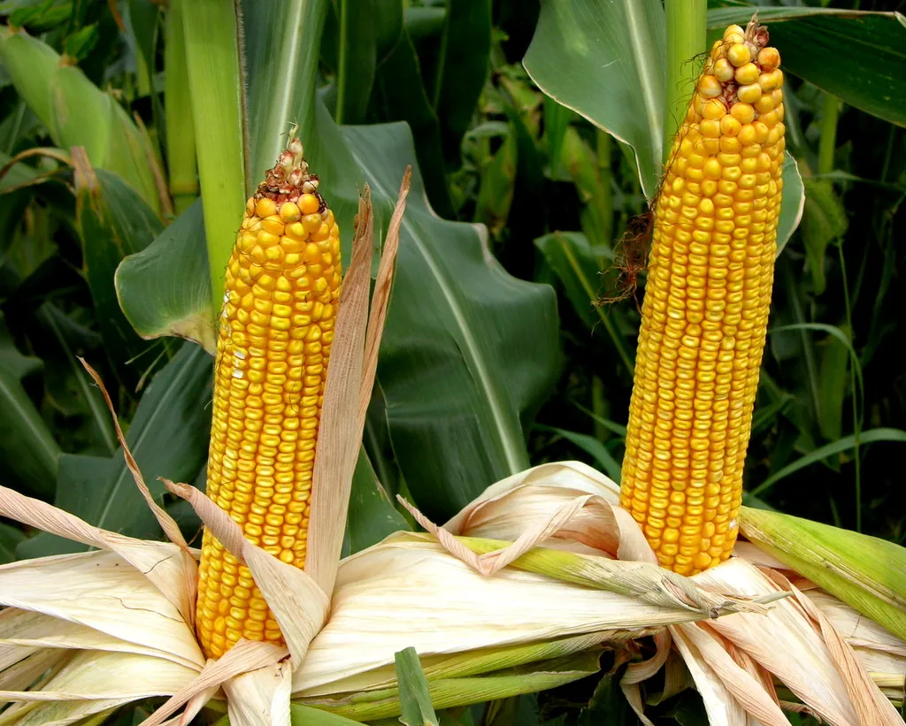
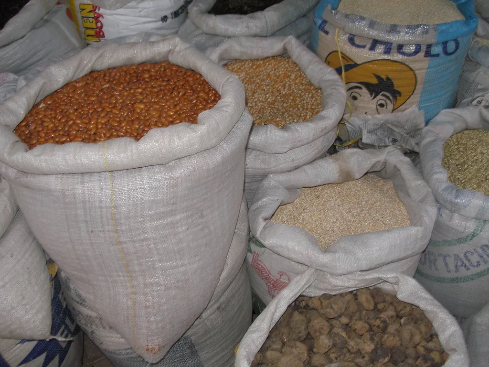
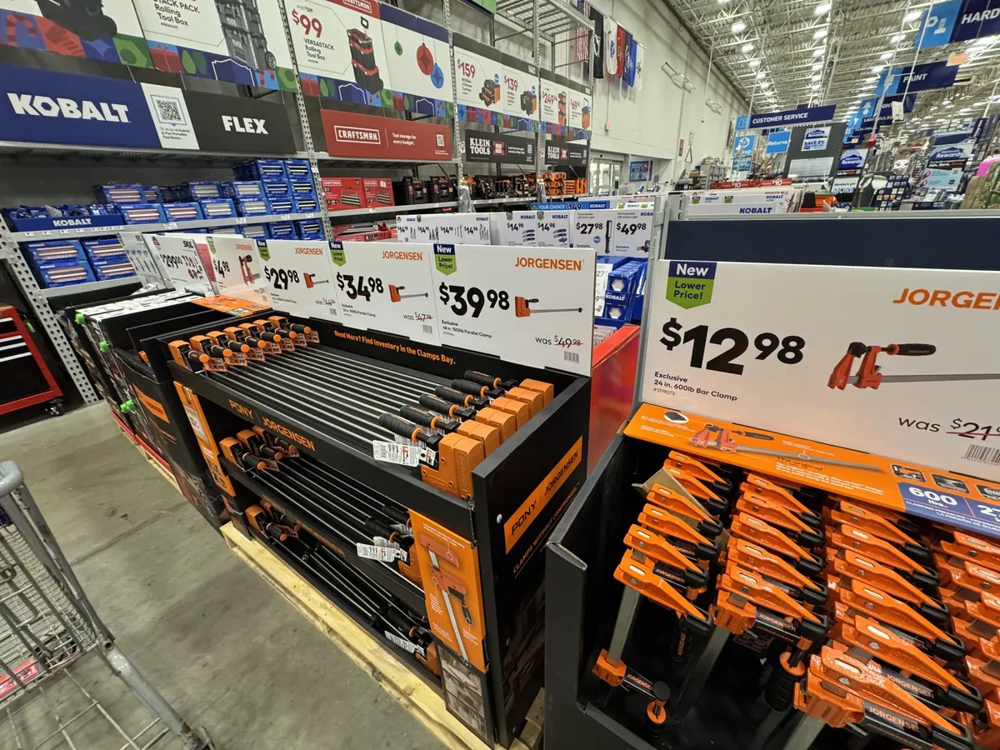

Farm supplies and hardware
Agroferretería Belén
On the Carretera a Santa Elena. Open 7am to 5pm.
The farming year
Most planting starts with the first rains in May. Ask early for seed and fertiliser so it’s here when you need it.
- Jan
- Feb
- Mar
- Apr
- May
- Jun
- Jul
- Aug
- Sep
- Oct
- Nov
- Dec
Rainy season, May to October
Dry season, November to April
Ask before you drive
Tell us what you need and WhatsApp opens with the question ready. We answer with what we have and the price.



Find us
Carretera a Santa Elena, Usulután, El Salvador. Open from 7am to 5pm. Call to check the days.